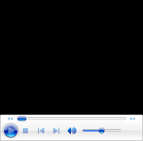
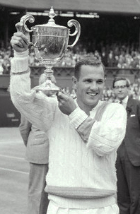

Head Hunting¶
Keith Hayes¶
--
--

In the fourth round of the 2012 Australian Open, Nicolas Almagro knocked Thomas Berdych to the ground with a close-range forehand.
After winning the match in four contentious sets, Berdych refused to shake Almagro's hand and left the court to a chorus of boos. But was Almagro's play legitmiate?

Chuck McKinley: Wimbledon champ and known Head Hunter.
Not according to Berdych: \"Whoever plays tennis knows that the court is pretty big and you always have some space to put the ball in.\"
Commentator Darren Cahill saw it differently, calling Almagro's forehand a \"Perfect choice of shot.\"
Almagro himself had no regrets: \"I played the point the way I had to do it in order to win,\" he insisted. \"I could leave the court with my head high.\"
So how cool and appropriate is it really to headhunt in tennis?
According to Dr. Allen Fox, who played on the tour through the 1960s, headhunting is not new. In Fox's day, Wimbledon champion Chuck McKinley was \"a known headhunter.\"
One year at Newport R.I., Fox recalls, McKinley hit Cliff Drysdale right between the eyes. Drysdale had a one-set lead at the time but was a changed player after being hit and lost the match. According to Fox, the ball McKinley hit had \"zero chance of landing safely in play.\"
The King
The King of the Headhunters, however, was the great Ivan Lendl. Throughout his career, Lendl took a perverse pleasure in hitting opponents as hard and as often as possible.
In the 1981 Volvo Masters final, Lendl blasted a forehand off Vitas Gerulaitis' head that sent him down. Gerulaitis had been ahead two sets to love at the time, but lost the final.
According to John McEnroe, headhunting is a fair play, especially against a regular net-rusher. After Andy Murray tried to decapitate Roger Federer in the 2012 Wimbledon final. McEnroe remarked, \"I was hit by Lendl way more than any other person. It's a legitimate play.\"
Ivan Lendl became the king of the headhunters with vicious shots like this one that knocked Vitas Gerulaitis to the court.
Allen Fox, however, doesn't recommend making it a regular practice. It's not a moral issue in his opinion though, it's strategic. \"Generally speaking, I wouldn't do it in singles because most people lose more points than they win---especially if they're trying to hit they guy out of emotion.\"
Doubles
But in the rapid-fire of high-level doubles, hitting opponents is much more common. When a volleyer gets a pop-up in doubles, the surest way to win a point is by making the opposing volleyer eat the ball. Since the players are so much closer together it's rarely taken personally.
But Fox recalls a different kind of doubles headhunting incident, again involving Chuck McKinley. And this time he was himself the victim.
\"I had already beaten Chuck in the singles, so he really wanted to win the doubles. My partner tried a lob-volley over Chuck that didn't quite cut it, and Chuck just crushed an overhead with extreme prejudice, right into my stomach. It hurt so much, I didn't even care about winning anymore---I just wanted to get off the court.\"
\"I played against all the greats back then, and Chuck was the only guy I was ever afraid of in doubles.\"
Andy Murray once tried to decapitate Roger Federer.
Lendl also relished a devastating hit in doubles. In a 1993 mixed doubles match, Emilio Sanchez hit a sharp volley at Lendl's feet. Lendl spun to avoid the shot and then smiled a disconcerting smile at Sanchez.
A few games later, he fired a missile straight into Sanchez's chest, knocked him down, and this time the smile this time was beaming.
A Perfunctory Wave
After hitting an opponent it's common for a player to follow it up with a half-hearted, perfunctory wave. According to Fox, \"It's the same wave people give opponents just after they've hit a let-cord winner. They're not sorry at all.\"
Lendl's current disciple Andy Murray, demonstrated this type of wave in the 2012 Wimbledon semis, after hitting a point-blank forehand into the testicles of Jo Wilfred Tsonga.
Lendl had a different kind of smile after his revenge on Emilio Sanchez.
As a nauseous Tsonga kneeled in agony, forehead to the ground like a Muslim in prayer, announcer Chris Fowler naively remarked, \"He didn't mean it.\"
But Darren Cahill again applauded the hit, \"No fault there from Andy Murray. He played the right shot.\" However, the slow motion-replay revealed Murray could have easily passed Tsonga instead.
Coincidence that Lendl and Murray, coach and player, have both made successful use of the headhunting tactic? You decide.
As For Ourselves?
There is one question for all players to ponder in deciding whether to hit for an opponent: is your goal to inflict pain, or are you simply trying win the point? According to Richard Gallien, USC Women's Coach, \"There's a difference between just hard-nosed tennis and trying to aim the guy.\"
Ask yourself this: if your attempted sting misses its target, will it hit the back fence on the fly? If you answered yes, you're a headhunter.
|  | Tennis Coach Allen Fox and became a counselor at his |
| summer tennis camps, beginning a tennis teaching | |
| career - and a friendship with Allen - that has | |
| continued ever since. After Pepperdine, Keith went to | |
| work in the San Francisco Bay Area advertising and | |
| graphic design industries. Later he also became an | |
| English teacher. As head coach of the Marin Catholic | |
| High School women's tennis team, Keith won | |
| back-to-back Division II North Coast Section titles | |
| in 2008 and 2009. When he's not teaching tennis, | |
| Keith continues to work as a freelance writer and | |
| designer. In addition to Tennisplayer.net, his | |
| stories have also appeared in TENNIS magazine. | |